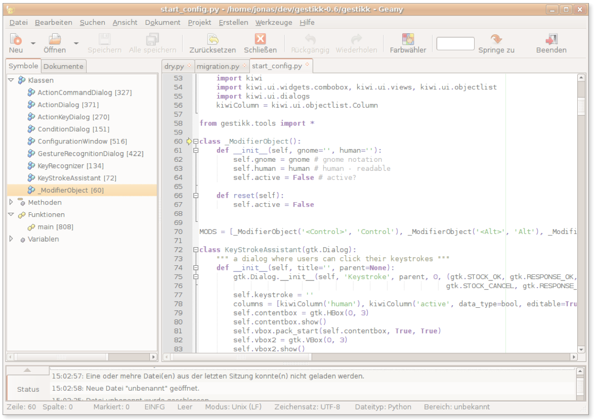
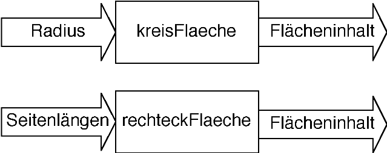
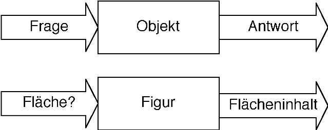
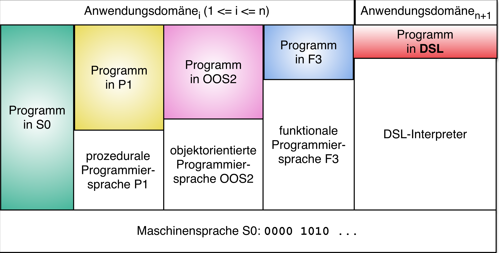

Created: 2017-10-10 Tue 19:45
(defn power [x y] (if (= y 0) 1 (* x (power x (- y 1)))))
Schreiben Sie eine statische Java-Methode, die ein Array von doubles als Argument akzeptiert und den Durchschnitt der Zahlen liefert.
public static double average (double[] numbers) { double sum = 0; for (int i = 0; i < numbers.length; i++) { sum += numbers[i]; } return sum / numbers.length; }
versus
(defn average [numbers] (/ (apply + numbers) (count numbers)))
isBlank?public class StringUtils { public static boolean isBlank(String strng) { int strngLen; if (strng == null || (strngLen = strng.length()) == 0) { return true; } for (int i = 0; i < strngLen; i++) { if ((Character.isWhitespace(strng.charAt(i)) == false)) { return false; } } return true; } }
Zum Vergleich:
(defn blank? [strng] (every? #(Character/isWhitespace %) strng))
Gegeben ist eine Liste mit Preisen:
final List<BigDecimal> prices = Arrays.asList( new BigDecimal("10"), new BigDecimal("30"), new BigDecimal("17"), new BigDecimal("20"), new BigDecimal("15"), new BigDecimal("18"), new BigDecimal("45"), new BigDecimal("12"));
Schreiben Sie Java-Code, der alle Preise größer als 20, rabattiert um 10%, aufsummiert.
BigDecimal totalOfDiscountedPrices = BigDecimal.ZERO; for(BigDecimal price : prices) { if(price.compareTo(BigDecimal.valueOf(20)) > 0) totalOfDiscountedPrices = totalOfDiscountedPrices.add(price.multiply(BigDecimal.valueOf(0.9))); }
final BigDecimal totalOfDiscountedPrices = prices.stream() .filter(price -> price.compareTo(BigDecimal.valueOf(20)) > 0) .map(price -> price.multiply(BigDecimal.valueOf(0.9))) .reduce(BigDecimal.ZERO, BigDecimal::add);
(def prices (map bigdec [10 30 17 20 15 18 45 12])) (def totalOfDiscountedPrices (reduce + 0 (map (fn [p] (* p 0.9M)) (filter (fn [p] (> p 20M)) prices)))) ;; oder syntaktisch gezuckert (def totalOfDiscountedPrices2 (->> prices (filter #(> % 20M)) (map #(* % 0.9M)) (reduce + 0)))
prices := #(10.0s 30.0s 17.0s 20.0s 15.0s 18.0s 45.0s 12.0s).
totalOfDiscountedPrices :=
((prices select: [:p | p > 20.0s])
collect: [:p | p * 0.9s])
fold: [:sum :p| sum + p]
Sie senden einen Brief an Ihre Eltern mit dem Inhalt:
SEND
+MORE
-----
MONEY
Wieviel Geld erhalten Sie?
Die Aufgabe besteht darin, jedem Buchstaben aus \(\{S,E,N,D,M,O,R,Y\}\) eine unterschiedliche Ziffer aus \(\{0,...,9\}\) zuzuordnen, so dass die Gleichung \[SEND+MORE=MONEY\] erfüllt wird.
Aufgabe: Lösen Sie das Problem in einer Programmiersprache Ihrer Wahl! Beachten Sie Nebenbedingungen.
S,E,N,D,M,O,R,Y) können zehn verschiedene
Werte annehmen. Ergibt \(10^{8}\) Möglichkeiten.S und M dürfen nicht \(0\) sein.M als Übertrag entsteht, kann M nur \(1\) sein.| z1 z2 z3 used | used := Set new. 1 to: 9 do: [:s | used add: s. 0 to: 9 do: [:e | (used includes: e) ifFalse: [ used add: e. 0 to: 9 do: [:n | (used includes: n) ifFalse: [ used add: n. 0 to: 9 do: [:d | (used includes: d) ifFalse: [ used add: d. 1 to: 1 do: [:m | (used includes: m) ifFalse: [ used add: m. 0 to: 9 do: [:o | (used includes: o) ifFalse: [ used add: o. 0 to: 9 do: [:r | (used includes: r) ifFalse: [ used add: r. 0 to: 9 do: [:y | (used includes: y) ifFalse: [ z1 := 1000 * s + (100 * e) + (10 * n) + d. z2 := 1000 * m + (100 * o) + (10 * r) + e. z3 := 10000 * m + (1000 * o) + (100 * n) + (10 * e) + y. z1 + z2 = z3 ifTrue: [ Transcript show: ' ',z1 printString; cr; show: '+',z2 printString; cr; show: '---------';cr; show: z3 printString; cr]]]. used remove: r ]]. used remove:o ]]. used remove: m ]]. used remove: d]]. used remove: n]]. used remove: e]]. used remove:s].
Resultat:
9567 + 1085 ------ 10652
Nutzung der Überträge der Addition für die Zerlegung der „großen“ Einschränkung in mehrere kleine:
Die Domänen der Variablen:
fragt AmitRathore2012
So ist es meistens falsch, anzunehmen, dass
W. Gibbs in Scientific Armerican:

Auf einem Parkplatz stehen Personenkraftwagen und Motorräder ohne Beiwagen. Zusammen seien es \(n\) Fahrzeuge mit insgesamt \(m\) Rädern. Bestimme die Anzahl \(P\) der PKWs!
\[\begin{aligned} P + M = n \\ 4P + 2M = m \end{aligned}\]
Begründen Sie, warum mit dieser Bedingung die Lösung des Gleichungssystems die folgenden Anforderungen erfüllt:
Das Wort Paradigma leitet sich vom griechischen Wort παράδειγμα (parádeigma) ab, das (lt. Menge-Güthling) übersetzt Beispiel oder Vorbild bedeutet.
Laut Duden sind Synonyme: [Fall]beispiel, Leitbild, Modell[fall], Muster[beispiel], Musterbild, Vorbild; (bildungssprachlich) Inkarnation, Prototyp; (bildungssprachlich veraltend) Exempel
Häufig wird das Wort im Sinne von Denkmuster gebraucht.
Antwort lt. Wikipedia: ein fundamentaler Programmierstil
Was ist ein Programmierstil?
Antwort lt. Wikipedia: „Ein Programmierstil (engl. code conventions, coding conventions, coding standards) ist in der Programmierung das Erstellen von Quellcode nach bestimmten vorgegebenen Regeln.“
| Imperative Programmierung | Deklarative Programmmierung | ||
|
Prozedurrale Programmierung |
Objektorientierte Programmierung |
Funktionale Programmierung |
Logische Programmierung |
Programm = Ausdruck, der einen Wert als Ergebnis liefert
(defn power [x y]
(if (= y 0) 1
(* x (power x (- y 1)))))
Beispiel: Sprache Prolog mit Fakten und Regeln
Fakten:
direkterChef(hans, franz).direkterChef(franz, heinz).Regeln:
vorgesetzter(X,Y):-direkterChef(X,Y).vorgesetzter(X,Y):-direkterChef(X,Z), vorgesetzter(Z,Y).(Darstellung angelehnt an Moessenboeck

flaeche := kreisFlaeche(kreis);
flaeche := rechteckFlaeche (rechteck);
Fallunterscheidungen notwendig, wenn in einem Programm Figuren verschiedener Arten gleichzeitig vorkommen; sei z.B. \(f\) eine beliebige geometrische Figur:
...
if f is Rechteck
then flaeche := rechteckFlaeche(f)
elsif f is Kreis
then flaeche := kreisFlaeche(f)
elsif f is Dreieck
then flaeche := dreiecksFlaeche(f)
...
… stellt die Daten in den Mittelpunkt der Betrachtung:

flaeche := f flaechenInhalt
flaeche = f.flaechenInhalt();

Entwicklung beschrieben durch Wille Faler in http://agile.dzone.com/news/one-night-clojure-makes-scala
„A simple metric generated with cloc“: